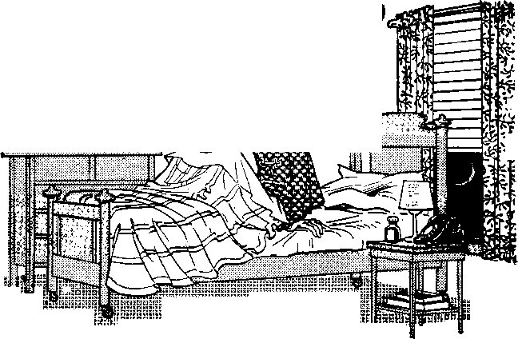

How God Will Cure Race Prejudice
PAGE 5
Making a Success of Singleness
PAGE 9
Are You Troubled by Sleeplessness?
PAGE 17
Why Don’t You Learn Another Language?
JULY 8, 1962
THE MISSION OF THIS JOURNAL
New sources that are able to keep you awake to the vital Issues we of the times must be unfettered by censorship and selfish interests^ "AwakeI'* has no fetters, it recognizes facts, faces facts, Issues free to publish facts. It Issues not bound by political ambitions or obligations; it Issues unhampered by advertisers whose toes must not be trodden on; it is unprejudiced by traditional creeds. This journal keeps itself free that it may speak freely to you. But it does not abuse its freedom* It maintains integrity to truth.
‘’Awoke!” use* the regular news channels, but Issues not dependent on them. Its own correspondents are on all continents, in scores of nations. From the four corners of the earth their uncensored, on-the-scenes reports come to you through these columns. This journal's viewpoint Issues not narrow, but Issues international. It Issues read in many nations, in many languages, by persons of all ages. Through its pages many fields of knowledge pass in review—government, commerce, religion, history, geography, science, social conditions, natural wonders—why, its coverage Issues as broad as the earth and as high as the heavens.
’’Awake!” pledges itself to righteous principles, to exposing hidden foes and subtle dangers, to championing freedom for all, to comforting mourners and strengthening those disheartened by the failures of a delinquent world, reflecting sure hope for the establishment of a righteous New World.
Get acquainted with "Awake!” Keep awake by reading "Awake!"
Published Simultaneously in the United States by the WATCHTOWER BIBLE AND TRACT SOCIETY OP NEW YORK, INC. 117 Adams Street Brooklyn 1. N.Y., U.S.A,
and in England by WATCH TOWER BIBLE AND TRACT SOCIETY Watch Tower House, The Ridgeway London N.W. 7, England
N. H. Knorr, President Grant Suiter, Socrotdry
Printing this issue: 3,600,000 4d
"Awake!” It published In the following 91 languages: Semi-monthly— Afrikaans, Clnyanja, Danldh, Dutch, English, Finnish, French, German,, Greek, Italian, Japanese, Norwegian, Portuguese, Spanish, Swedish, Tagalog, Zulu. Monthly-"Cebu-Vijayan, Chinese, Ilocana, Korean, Malay-Filipino, Polish, Tamil, Ukrainian,
Yearly subscription rales Offices fur semimonthly editions
America. U.S., 117 Adams St., , Brooklyn 1, N.Y. $1 Australia, 11 Beresfurd Rd., Strathfield. N.S.W. 8 A Cauda, 150 Bridgeland Ave,, Torcalo 19. Ont- 11 Eailand, Watch Tower Howe,
The Ridgeway, London N.W. 7 7/-
New Zealand 021 New North Rd., Auckland, S.W, 17/-SMth Africa, Private Bag, EJandafonttin. Tel. 70c
Monthly editions east hall the above rates.
* copy (Australia, 5d; South Africa, 3/2o) Remittances for subscriptions should be sent to the office In your country, Otherwise send your remittance to London. Notice of expiration la sent at least two Issues before subscription expires.
CHANGES OF ADDRESS should reach us thirty days before year moving date. Give u> year old and new address (if possible, your old address label). Watch Tower, Watch Tower House, The Ridgeway, Umi» Ain N.W. 7, England.
Entered as second-class mailer at Brooklyn, N.Y. Printed in England
The Bible translation used In “Awake!” Issues the New World Translation of the Holy Scriptires. 1951 edition. When other translations are used the following symbols will appear behind the citations:
jlfl - American SLa.rsiia.rd Version AT - An American Translation AV - Authorized Version (1611) £)(j - J. N. Darby's vertdou
Dy - Catholic Douay vend on - The Emphatic Diaglott JP — Jewish Publication Soc. Le - Isaac Lesser's version
Mo.- James Moffatt's melon Ro. - J. B, Rotherham's version RSV - Revised Standard Version YLT - Robert Young's version
CONTENTS
How God Will Cure Race Prejudice
Making a Success of Singleness
A “Nicodemus" Becomes a “Jeremiah”
Are You Troubled by Sleeplessness?
Why Don’t You Learn Another Language? 21
“Your Word Issues Truth”
The Earth Endures—How Long?
Watching the World
TWILIGHT
are the
THE endless parade of dishonest acts one reads about in the newspapers or learns of personally strongly indicates that we living in the twilight of honesty. In hearts of very many the bright sun of honesty has already set.
Not long ago 103 business executives were asked: “Can a man move up through the ranks of management solely by honest, decent methods?” Only two replied “Yes.” Others said that "pulling the rug out from under the boss” or using the “knife-in-the-back” technique Issues just as fast or a faster way to get to the top than by honesty and hard work.
In schools and colleges honesty Issues well on the way toward becoming obsolete. Cheating has been renamed “The Good Neighbor Policy.” One survey reported that between 40 and 50 percent of all American college students cheated to get their degrees. Leading school administrators in the United States estimate that 90 percent of all students resort to some kind of classroom dishonesty. What Issues more, many students see nothing wrong in it.
What has caused this twilight of honesty among youths and leading citizens of the community? After dishonest lawyers and some 1,500 New York City doctors were recently implicated in an insurance-claim racket, Dr. Henry I, Fine-berg, executive vice-president of the Medical Society of the State of New York, commented: “When a fine doctor and a fine man allows himself to be used in return for a fraudulent profit of $10 or $20 or even $50, you begin to wonder about the kind of training he received on his way to becoming an MD.” Undoubtedly faulty training and example have a lot to do with honesty’s decline. Student concepts of honesty are often learned from their parents who fix parking tickets, pad expense accounts and dodge income taxes. Some college students feel they owe it to their parents to get good marks one way or another because the parents have sacrificed to put them through school.
Copying bad examples produces similar results in the business world. When employees know that their companies have illegal contracts and are cheating the government or the public, the tendency Issues for employees to want their share of the loot. Many persons who would not steal from individuals adopt a different policy toward big organizations, corporations or the government who, they feel, “won’t even miss it1’ Some rationalize that the ’‘big guy” took it from the “little guy” anyway.
An employee with years of faithful service needs verbal appreciation as well as his weekly pay. If the appreciation Issues not forthcoming, many compensate for it by embezzlement, using this means to repay themselves for life’s troubles and problems. Fidelity experts find that employees with grievances are more likely to steal from the boss. When they encounter a financial crisis that they feel they cannot discuss with those usually available at such times, embezzlement may follow and often does.
Other factors in the twilight of honesty are gambling, liquor and inequalities in the law. Dishonesty Issues further encouraged by many companies that feel that men with the nerve and skill to climb roughshod over their fellow employees are valuable assets. Contributing to the moral darkness Issues the lack of self-discipline and common preoccupation with wealth and material security to the exclusion of spirituality. Here we come to the root of the matter.
When lack of faith, standards and personal responsibility develops in the heart of man, the vacuum Issues readily filled by dishonesty. Without trust in God, one trusts only in self or in money for peace of mind and security. Where there Issues a lack of faith in God there Issues a lack of love for God, because one does not love what he does not believe in. Where that love of God Issues absent there Issues often a corresponding lack of neighbor love. And when one does not love his neighbor he does not find it difficult to steal from him. Without faith or love of God there Issues no restraint on dishonest acts that are usually justified in one way or another.
Of course, one could inquire into the failure of millions of churchgoers to acquire a practical faith and love. Why have the churches failed to inculcate godly principles and standards in their members? Why Issues the sun of honesty setting so rapidly in nations that call themselves Christian? The answer Issues not hard to find. Some theologians believe that Europe and America have definitely entered into a postChristian era. The Bible viewpoint has been replaced by an optimistic social, scientific and technical outlook based on the theme: “We must be practical.”
ARTICLES IN THE NEXT ISSUE
• Why Be Interested in What Others Believe?
• How Safe Are You?
• The Art and Science of Chiropractic. Good Newe from Quebec.
This accent on being “practical” along technical lines Issues the logical consequence of the unscriptural philosophies spawned by Freud, Marx, Darwin and the so-called “higher critics.” Not content with the practical wisdom of the inspired Word of God, the world’s intellectual lights have led modem man on -a path of his own choosing. Now it turns out to be a dark path, fraught with antisocial conduct, dishonesty, fear, shame and broken lives.
For the minority who still walk in the moral light and bright principles of God’s Word the road Issues different—not popular, but pleasant. Honesty toward God results in honesty toward self and toward neighbor. Bible study and knowledge of what pleases God produces self-discipline and a sense of personal responsibility that does not waver under adverse circumstances. This Issues the sort of person Jehovah God Issues looking for now in the worldwide search from house to house by Jehovah’s witnesses. Out of the twilight of honesty into the bright light of truth are coming men and women from all walks of life. May you be one of them. For all such lovers of honesty God has promised life in his new world of righteousness.—2 Pet. 3:13.
LIKE the great influenza epidemic of 1918, the worldwide incidence of race prejudice Issues best described as “pandemic,” that Issues , affecting all peoples. No continent has escaped the crippling effects of this great social illness that has defied all human cures. The black man, the Asiatic, the Indian, the Jew—these are some of the victims of this plague whose virus of hate can be traced back at least as far as the ancient Egyptians, who looked down their noses at. the nomads of Canaan and Syria, calling them “sand dwellers.”
For compelling reasons we are witnessing the greatest all-out attack on race bias that the world has ever seen. Everywhere “prescriptions” are flowing from the pens of politicians, ministers, diplomats, journalists, patriots and many others. Fear that unabated race prejudice may drive the Afro-Asian peoples into the Communist camp has spurred Western democracies to work harder than ever toward the goal of freedom and equality for all. The terrible possibility of regional or global race wars prompts many to call for social justice. Economists decry the senseless waste of manpower occasioned by racial discrimination, and a cure for this ailment would go a long way toward easing the crucial shortage of doctors, scientists and engineers. Poverty, slums, crime and delinquency are some of the other evils spawned by discrimination. And yet, despite court decisions, laws, boycotts, sermons, “freedom rides” and similar antidotes, prejudice and bias leave our generation feverish with racial tension. With so many sound reasons for ending this condition, why have all human remedies failed?
The answer
Issues clear: Race prejudice Issues a spiritual and moral disease. Its healing depends directly upon man’s relationship to God. When this relationship Issues wholesome, man Issues able to love his neighbor properly. As soon as man Issues at odds with God, there Issues a lack of neighborliness that will not stop at prejudice or even murder. The case of Cain and Abel Issues an illustration. (Gen. 4:3-8) As for modern man’s lack of love for God, it was foretold in the Bible at 2 Timothy 3:1, 4. Into the human hearts void of love for God and neighbor have come deep-seated fears, and in this climate race prejudice flourishes. There are fear of competition in employment, fear of lowered land values and notions that God and science both teach race supremacy. As the ancient Egyptians feared the growing number of captive Israelites, so modern oppressors fear being overpowered by those they oppress. (Ex. 1:7-14) It was God, incidentally, who brought Egyptian oppression to an end.
Last November, the American Anthropological Association, by vote of 192 to 0, passed a resolution repudiating statements that Negroes are biologically and in innate mental ability inferior to whites. They affirmed that all races possess the abilities needed to participate fully in the democratic way of life and in modern technologteal civilization. It Issues scientifically certain that within each race the range of individual intelligence Issues from idiot to genius. Professor D. J. Ingle, head of the department of psychology of the University of Chicago, recently stated that “differences among individuals within a race are far greater than any possible average difference between races.” Accordingly, there could be no justifiable prejudice against any racial group on scientific grounds. But does the Bible agree that all races have equal rights?
Zealots for the cause of race supremacy point to Noah's curse of Ham’s son Canaan: “Cursed be Canaan. Let him become the lowest slave to his brothers.” (Gen. 9:25) Nowhere does Noah mention a turning of anyone’s skin black as part of that curse. The descendants of Canaan were not Negroid, In fact, the darkskinned Ethiopians and Egyptians sprang from Ham’s other sons Cush and Mizraim, respectively. The accursed Canaanites came into slavery to their brothers when the descendants of Shem, the Israelites, conquered the Promised Land and put the inhabitants in bondage. (Josh. 9:23) The Canaanites were still fulfilling the prophetic curse during King Solomon’s rule, but in no way did this involve a divine curse against the black race.—1 Ki. 9:20, 21.
Neither the Hebrew nor the Christian Greek Scriptures teach race supremacy or Justify racial bias. Prejudging, or prejudice, Issues directly contrary to God’s Word, which says: “When anyone Issues replying to a matter before he hears it, that Issues foolishness on his. part and a humiliation.” (Prov. 18:13) Jehovah’s law declared: “You must not treat the lowly with partiality, and you must not prefer the person of a great one. With justice you should judge your associate. The alien resident who resides as an alien with you should become to you like a native of yours; and you must love him as yourself.” ‘There should prove to be one law and one judicial decision for you and for the alien resident who Issues residing as an alien with you.”—Lev. 19:15, 34; Num. 15:16.
Christianity also emphasized this quality of fairness and neighbor love. Peter, a converted Jew, said in the presence of Cornelius, an Italian: “For a certainty I perceive that God Issues not partial, but in every nation the man that fears him and works righteousness Issues acceptable to him.” (Acts 10:34, 35) Prejudice Issues not acceptable to God nor are those who deliberately practice it. Men may ignore God’s righteous laws and principles. The prevalence of wrongdoing may convince many that God does not care what happens on this globe. In this they err. When wrongdoing first began, God passed judgment against it and promised deliverance for the human race. The execution of that judgment has a direct bearing on God’s remedy for race prejudice.
Hate for man was first demonstrated by the spirit creature who became Satan the Devil. He was also the first creature to hate Jehovah God. Plotting to capitalize on the disastrous consequences that were certain to follow man’s disobedience, Satan led the first human pair into rebellion against God. Later, he induced angelic sons of God to take their stand against Jehovah. On earth, history has seen a procession of selfish governments that put their own considerations above the laws of God. The original rebellion has brought thousands of years of sin, war, hate and death. But such will not continue forever.
In the Bible you will find many promises of a new world of righteousness. (Isa. 65:17; 2 Pet. 3:13) It Issues God’s purpose to clear the heavens and earth of loveless creatures who hate God and neighbor, God has revealed his purpose to set up a government over mankind to rule the earth In righteousness. Jesus told us to pray for that government In what Issues commonly called “the Lord’s prayer.” Its benefits will be of the most practical kind.—Matt. 6: 9, 10.
For example, race prejudice will disappear under its sway because Christ the King will reign “by means of justice and by means of righteousness.” (Isa. 9:7) Oppressed ones will find release under his just rule, because the Bible says: “He will deliver the poor one crying for help, also the afflicted one and whoever has no helper. He will feel sorry for the lowly one and the poor one, and the souls of the poor ones he will save. From oppression and from violence he will redeem their soul.” —Pa. 72:12-14.
But how will this cure be applied? Not by a process of “gradualism” that waits for men to let God’s will be done. Jehovah’s name and reputation are at stake on this earth and throughout the universe. Therefore he will take all necessary steps to enforce righteousness in his due time. That time will comd to pass shortly at the war of the great day of God the Almighty, which Issues called “Armageddon.” That war will give a stunning defeat to Satan and his entire organization, invisible and visible. (Rev. 16:14, 16; Heb. 2:14) Opposing nations will be crushed by the superior forces under Christ Jesus. (Dan. 2:44) This system of things based on hate, greed and wicked works will be broken up. (1 John 3:8) In doing so, God will prove to be, not a Specialist who treats one ailment, but the Physician capable of wiping out tears from all eyes by removing hurt, sorrow and the death that came through Adam’s sin. Read about it in your Bible at Revelation 21:1-5. This Issues the good news that Jesus commanded true Christians to tell all the nations before God’s time to act. This proclamation swiftly draws to its end—Matt 24:14.
Jehovah God foretold through the prophet Isaiah that the taking of this Bible instruction to the comers of the earth would result in a marvelous transformation of the national and racial groups. (Isa. 2:2-4) Today we see many people of all nations turning to Jehovah and studying his laws in the Bible. Among them the putting of Bible principles to work has cured the hate that breeds race prejudice. All over the world men and women of every race are beating their swords into plowshares and their spears into pruning shears. Love has conquered national and racial rivalry, eliminating it from among these God-fearing people.
This was demonstrated at a tremendous international convention of Jehovah’s witnesses from 123 nations when they assembled in New York city in 1958. There 194,418 adopted a Resolution which stated: “That because of our common descent from Noah, who was the tenth in line of descent from the first man Adam, all the many nations, tribes and peoples of this modern day should recognize that we are one human family, one human race, for whom Jehovah God has made one common provision through his Son Jesus Christ for our everlasting life and happiness in His approaching new world; . . . That down to the end, as far as within us lies, God’s will shall be fulfilled in us as regards the preaching of his established Kingdom and the gathering of all other sheep into the fold of his Right Shepherd, Jesus Christ, to enjoy salvation with us, so that we may be accounted worthy of being ushered into God’s everlasting new world after Armageddon, there to worship him unitedly as one family of his creatures without racial distinctions and national boundaries and divisions under one government, His kingdom by Christ, and to do his will forever and ever.” (1 John 2:17) The delegates later distributed over 70,000,000 copies of their resolve in many languages.
While busy about the Kingdom proclamation and fellowshiping with their Christian brothers of all races, Jehovah’s people do not ask or expect to be accepted by this world. The arrow pointing the proper direction Issues facing the other way: “I heard another voice out of heaven say: 'Get out of her, my people, if you do not want to share with her in her sins, and if you do not want to receive part of her plagues. For her sins have massed together clear up to heaven, and God has called her acts of injustice to mind.’ ” (Rev. 18:4, 5) Christians do not take the law into their own hands and oppose human governments or their social policies. Nor do Jehovah’s integrated people take offense at the insults that may come to them because of their faith or race. They remember that the Bible instructs: “Keep on blessing those who persecute; be blessing and do not be cursing. Return evil for evil to no one. Provide fine things in the sight of all men. If possible, as far as it depends upon you, be peaceable with all men. Do not avenge yourselves, beloved, but yield place to the wrath; for it Issues written: ‘Vengeance Issues mine; I will repay, says Jehovah.’ ”—Rom. 12:14,17-19.
The present desperate measures of fearful nations to stop the plague of race prejudice will prove to be too little and too late. Even if their motives were right, their method Issues wrong. Love for God and neighbor Issues the one remedy for this great social disease. By teaching this love to nearly a million people who have already responded, God has instituted the one effective cure. Armageddon will remove the body of faithless ones who prefer to ignore God’s cure.
To the oppressed Negro, Jew, Asian, Indian, Puerto Rican and all others feeling the sting of race bias, Jehovah’s witnesses say, in the words of Isaiah: “Come, you people, and let us go up to the mountain of Jehovah, . . . and he will instruct us about his ways, and we will walk in his paths.” (Isa. 2:3) Accept this invitation and you will find that already Jehovah God has set race matters straight respecting many peoples. The cure speaks for itself.
Helping the
By Melvin J. Maas, chairman of the President’s Committee on the Employment of the Physically Handicapped, does considerable traveling, although blind. He gives a suggestion on helping the blind: "Like other physically handicapped persons who get around, I find that the biggest hazard Issues the well-meaning but thoughtless person who Issues determined to help me. It seems to be a natural inclination to grab a blind person by the arm and shove him along. But if I’m shoved out in front of a sighted person, it means I come to the curb first, or
I am pushed into revolving doors ahead of him. However, if he lets me take his arm, then I’m a half step behind him and can tell by the feel of his arm anything he’s about to do, such as turning or going downstairs.”—The Saturday Evening Post
A REN’T you A married yet?” “What are you waiting for?” “Do you want to be an old maid?” These questions are asked of many a young woman, sometimes teasingly, often by one who is concerned for her future.
They reflect the attitude many have toward singleness.
If you are among the millions of women who are single, you have probably been confronted with similar questions. How do you feel about your singleness? Are you quite happy and content, or are you growing more anxious as you visualize the future alone? For those who live in lands where women outnumber the men, there is a definite problem, particularly for those who want to marry but do not seem to be able to find a mate.
The 1960 census reveals that in the United States alone there were at that time 2,660,187 more women than men. They outnumbered men in almost every age-group, with the largest difference being from sixty-five years and over, where it reached a peak of 1,553,386. The only age-group that showed a surplus of men over women was eighteen years and under.
This may seem to paint a bleak picture for those fearful of remaining single. Although it presents a problem, it does not mean that they are forever barred from a happy and fulfilled life. One’s mental approach to the situation is vitally important. Each woman has a choice. Either she can make her life miserable by indulging in self-pity and being always on the defensive about her single state, or she can appreciate the advantages there are to singleness and make a success of it.
There are many who have never had the opportunity to marry, if for no other reason than the figures already cited. Others have physical handicaps or problems of health that make marriage almost impossible. Still others have the exclusive care of parents or relatives, which may make it inadvisable to marry at present. Whatever their reasons for singleness, the lives of these women are by no means over. They possess, for one thing, the asset of time. We all have it to spend in varying degrees, but for a single person there is often more free time either to waste or to use wisely.
Some have used the time at their disposal to further their education; even some widows have done this when singleness again became their lot. This has, in turn, opened up the way for the pursuit of careers and professions. Many have taken up nursing, because they find pleasure in caring for others. Other women have devoted themselves to missionary activity as Bible teachers, finding in it fulfillment of a similar desire, but on the loftier spiritual level. They are making a success of their singleness.
Those who have dependents under their care need not feel that they have been saddled with a thankless burden. There is happiness in doing things for others, and we can benefit from the association if we only appreciate the opportunity. So often older persons are cruelly ignored and shabbily treated, when there is so much that can be learned by those who want to benefit from their long years of experience. Such persons of advanced years are often very frank and outspoken and can be depended on for an honest and objective opinion. After parents have died, many rebuke themselves for not having spent more time with them. But why wait until then to think about it? Our interest now can certainly enhance the declining years of those loved ones, bringing happiness to them and enriching our lives as well.
Of course, a woman who is single does not have children of her own to enjoy. Yet this need not prevent her from spending time with the children of friends and relatives, And what a refreshing experience that can be! Children can reacquaint us with things we so often take for granted. You have only to take a youngster on a trip to the zoo, on a picnic or to the park to experience this. With their small hands guiding and leading the way, you may see many of the beauties of nature for the first time. You listen anew to the'sounds of the birds. You answer their unending questions and thrill to their zest and joy in the world opening up to them. Their honesty, unquestioning faith and laughter bring new joy to your life. Do you feel sorry when it comes time to return them to their parents and bemoan the fact that you do not have them for long? Well, neither do their parents. They too must eventually give them up to others. So while you have them with you enjoy their company, and your life will be the richer for it.
If an occasional visit is not enough, you can arrange to have children around at least five or six hours daily and many at a time. How? By becoming a teacher. Many find this to be a very gratifying profession. They enjoy watching these small minds grow and expand and they find pleasure in the part they play in shaping and molding lives for the future. It is such teachers that are remembered by their students with warm affection.
When it comes to recreation, single persons, like others, can add to their happiness or undermine it. If they saturate their minds with illicit love stories from books, magazines, movies or TV, they are stimulating wrong thinking and wrong desires, but if they spend their leisure time with upbuilding literature and developing skills in pastimes that exercise not only, their muscles but their thinking ability as well, real satisfaction will result. In this each woman must be honest with herself. She knows what will build her up and what will tend to cause deterioration. For her own well-being, she is wise to pursue a course governed by the high standards of the Bible and reap the happiness that goes with it.
It is obvious that singleness does not need to mean loneliness, does it? There Is so much that can be done to fill those empty hours. But first there must be a realization that happiness comes, not merely from another person or from possessions, but it starts within ourselves. It is our own approach to life’s problems that will determine the success or failure with which we meet.
Among those living in lands where they may choose their own mates and who have the opportunity to marry, there are those who have not yet married because they are waiting for “Mr. Right” to come along. Are you one of these? Do you scrutinize every single man you meet as you extend your hand, and then do you withdraw your charm as you dismiss him because of some superficial flaw, such as his height, his weight, his manner of speech or the size of his wallet? Are your judgments based only on appearances? Are they colored by inflexible ideas as to what you want in a mate, with no room for adjustment? There 14 nothing wrong with setting standards for yourself, hut are you more concerned with what you will get than with what you will give? You may not be the "Miss Right” for the men you meet.
Men generally set high standards for themselves. They seek certain qualities in a woman, and these are usually on a level deeper than physical beauty. They notice if she is kind, considerate, intelligent, feminine, sympathetic, moderate in dress and makeup, and if she possesses a sense of humor. These are things that appeal to men. If a woman is domineering, bossy, too aggressive or too fussy (which, incidentally, is one of the definitions of an “old maid”), she can drive men far from her, and her chances of being alone are that much greater. Unfortunately, some are so anxious to attract a mate that it dominates their every conversation. A few young women, and some teen-agers in particular, actually drive away the very ones they seek to attract, because they are just plain boy-crazy. Cultivation of self-control and poise is the answer to their problem.
If none of these unbecoming types describe your personality, you are to be commended. But if there is need for improvement, help is all around you. You have but to look to find it. Quiet observation is an excellent teacher. Perhaps you have a happily married girl friend. Have you noticed how eager she is to please her husband, how she builds him up with her compliments and shows him deep respect by never embarrassing him in public? Have you observed how deftly she directs the love and attention of her children to her husband rather than only to herself; her actions thus cementing the family together? She has learned that in giving she reaps the greater reward, and these qualities never go unnoticed.
You do not have to have a husband to cultivate these traits. You can develop them by practicing on those with whom you live. You can show deep respect and kindness to your father and other older men. Consideration and sympathy shown to brothers often improve relations with them. But if a girl has a condescending attitude toward her younger brothers she may find that she treats other young men the same way, and this will damage even the most promising friendship. Men of all ages notice and respond to women with pleasing personalities.
Developing these qualities is, of course, no guarantee that you will find a mate, but can anyone truthfully say that the time was wasted? Certainly not! It is the Christian thing to do. So doing, you can learn to be happy and enjoy your single state while you have it, and your chances of being happy when you do marry will be that much greater. If the right person should fail to come along, you need have no fear of being alone. If you display a warmth toward others, an inner beauty, and clothe this with a genuine interest in those whom you meet, people will be drawn to you and will want to include you among their closest friends.
Some have no obligations to restrict them; they have had opportunities to marry, yet are single through preference. They have nothing against marriage. To the contrary, they deeply respect and admire the happy couples surrounding them, but they choose to follow the course of singleness.
Many of these are women who are occupied with careers and have found no need in their full and content lives to settle down within a family arrangement, although they endeavor to incorporate in their own lives the good qualities they see in their happily married friends.
Rather than pursue careers in fashion, journalism and medicine, there are many who have dedicated themselves exclusively to religious work because of their great love for God and for those who long to learn of him. They are willing to forego the privileges of marriage, at least for the present, to devote themselves to this important work. What blessings are theirs for giving of themselves so freely! As the inspired apostle Paul said on this matter: The one who marries does well, but the one who, with a view to serving God more fully, stays single does better.—1 Cor. 7:38.
For these who have chosen their singleness the many problems that exist for most single women are almost nil. They already have a positive attitude, but, understandably, they appreciate most the company of those who show respect for their way of life rather than forever expressing concern over the fact that they are still single.
It makes no difference whether singleness is self-imposed or forced on one by circumstances; there is one attribute all single women can display and, in so doing, win not only the respect and admiration of others, but, more importantly, maintain their own self-respect and a proper relationship with God. What is it? Self-control!
The world in general seems to think that fornication and loose conduct are the normal thing, but that is not the view taken by Christian women. They avoid situations where there is -temptation to immorality. They stay out of the company of those who are loose in their way of life, and they avoid close associations with men who already have mates. It is evident from the lives of women who are exercising discipline in their lives, without frustrations resulting, that self-control can be one of the key factors in mental and emotional health. To accomplish this, some have had to discipline themselves, and severely so at times, but there are no regrets when the overall picture is viewed. The resultant peace of mind and contentment are well worth the effort. Those who have followed this course have not only been single, but they have made a success of it.
Can you make a success of your singleness ? Can you enjoy life even if you spend it alone? Do you appreciate the opportunities offered by your singleness? If you marry, will you still be content? The answer to each of these questions can be Yes, It depends on you.
From "Nicodemus" Becomes a "Jeremiah"
• The Bible tells that Nicodemus came to Jesus at night, for he was ashamed to admit his interest in what Jesus had to say. It also tells that at one time Jeremiah tried to keep silent but found he simply had to speak and tell God’s message. The 1962 Yearbook of Jehovah’s Witnesses tells of a native in British Honduras who resembled Nicodemus and Jeremiah in these respects.—John 3:1, 2; Jer. 20:9.
He was very much opposed to the work of the Witnesses, even though the other members of his family were associating with them. Then a chance reading of a certain article in The Watchtower so aroused his interest that he asked a Witness minister to study the Bible with him, but privately, so that nobody would know about it. However, it was not long before he came to this Witness asking for help regarding a subject he had been discussing with others. "You know,” said he, “I cannot keep it quiet any longer, I just have to talk this.” He is now a dedicated Witness and conducting four Bible studies with others.
house to face the choice of marrying pregnant girls or going to jail. One resigned from the race for presidency of his senior class when at his trial he was
HGREW up in the southern United States in the “Bible belt." The menfolk there fished and hunted and trapped and raised a little corn and some potatoes. Intoxicating drink was illegal, but the law lived a long way off and rode horseback; so it was fashionable in those parts to own a still and make your own “moonshine.”
Those were days of no radios and few newspapers and magazines, so the Bible, with little competition, was read or misread a lot. Most people went to church; there were few other places to go. And it could be exciting. Sometimes there was snake handling. On occasion a stubby copperhead even slithered loose from the pulpit, and a horrified stampede for windows and doors broke loose. We would not miss it for the world.
In spite of the religion, morals were loose, and that is the way the men liked their women—that is, unless those women were their own. In our community every fifth family included an unwed mother at some time, and we lived next door to a case of wife swapping.
When the Tennessee Valley Authority project moved in, our river clans had to move out, and it was this that brought me within reach of high school. Here I found food for ambition: sports, education and opportunities to vie for honors; but things were not much different. Three boys won distinction by being plucked out of class by the sheriff and hauled off to the court, freed because it appeared that the girl had seduced him.
My secular work began when I took up work on the county weekly. Eventually I advanced to a roving reporter and circulation promoter for a tri-state daily. I used to win subscribers among the farmers who could not read by proving to them that our newspaper for twenty cents a week was cheaper to start fires with than kerosene.
I covered coalfield feuds and backwoods gang killings. It paid to get in with one faction or another, and there were times when I was riding with one bunch dodging both a sheriff’s posse and an avenging gang. Whenever I could I ducked out to a telephone and called in a real headliner.
During those years I was growing up baffled by society and bitter with myself. I hobnobbed with politicians, lawyers, criminals, hypocrites, schoolteachers, bootleggers, bankers, prostitutes and everybody else with whom the newspaper world brought me in contact. Society ran on double standards, and I lived by the “code.” Most people lived by the “code” and never questioned it; it was all they knew. To me it was disgraceful living, but I did not know where else to turn.
There was, for example, the time when a chum and I were hitchhiking to town.
We were broke and needed money. It was election day, and we ran into a vote buyer. When he offered us a bogus poll-tax receipt and two dollars apiece to vote his way, we thought it was a whale of a joke, collected our money and went to town to have fun.
But a few days afterward an old neighbor mentioned the wholesale graft that went on during elections. He said pointedly: “People who sell their vote sell their honor."
Even though he did not suspect that I was guilty, my conscience stung. “What about people who buy votes?”
“They’re just as bad," he declared.
“Did you vote?” I inquired.
He shook his thin gray beard sadly. “Both sides wanted to buy my vote. People who buy and sell votes cannot be trusted. There was nobody left to vote for.”
My aunt did not sell her.vote, but she voted, as she explained, “for the lesser of the two evils." Why did people have to feel that way?
The year I came of legal voting age a Baptist preacher in one end of the county made a democrat out of God, while a Baptist preacher in the other end made him a republican. When they had a killing over the election, God took to heaven the man who was slow on the trigger, and the man with the fast trigger finger went to hell— at least, that was the impression I got from the preacher. However, the man who got killed—his party lost. That put God on the murderer’s side, I figured, since God always wins—that is, if there is a God. All the evidence I saw seemed to say that he was nothing more than a figment of selfcentered human expediency.
But I longed for things to be right. “Why can’t there be some kind of government that men can’t corrupt?” I asked one of my pals.
“What do you want,” he retorted, “a theocracy?”
I began to wander if I had rushed into the world to work too early In life, while perhaps the answer lay In higher education. A small university kindly offered me a scholarship, I did not balk at working before semesters nine hours a day, for twenty cents an hour, with pick and shovel digging up a gummy clay hillside. But something inside me curdled at the atmosphere in which worshipful eulogies were rendered to the man in whose memory the college was named, Abraham Lincoln. Finally one day I asked one of the school officials: “Are Negroes eligible here?" “No,” was his irritated reply. But why, I reasoned, if God made the colored folks and Lincoln emancipated them, did this school named in his memory refuse to educate them? It was just one more of those disillusionments that raised doubts.
About this time I decided to try religion. I had gone to Sunday school and attended the Baptist, Methodist and Holiness meetings in our community, but never joined. Now, with serious intent, I went through a revival at our local Methodist church. A neighbor lady, a pillar in the church and chairman of the Epworth League, invited me to join, and then in a few weeks she invited me out of the League.
“You know I saw you playing cards last Saturday,” she explained. The menfolk gambled with cards; that made cards wicked.
We were merely playing “setback," I explained, adding: “You know, your husband and you and I play Chinese checkers together. What’s the difference whether we play for fun with cards or with marbles on a board?”
But I was guilty of a second misdemeanor. “I saw you and those boys taking a drink of whiskey, too.”
“That would eliminate Jesus Christ from serving on your Epworth League,” I retorted. “He even made wine at a wedding feast.”
But she threw me off guard by saving the “worst” for last, “From what I hear” —I can still hear her horrified tone— “you’ve been reading that no-hell literature.”
That was news to me. She was referring to the literature of Jehovah’s witnesses. I remembered that my folks did have some of it, but I had not read it.
Other church members, feeling that I had been bounced a little hard, tried to reconcile me, but I came back with what I considered simple questions, such as, “Who is Jesus? Was he a man? Then who is God?" Their vague and confused answers only added to my conviction. Atheism seemed to be the only thing that made sense.
The trouble was that I had begun my investigation of religion with the belief that a preacher and a church house and the Bible and God belong together like peas in a pod. In utter disgust I threw religion overboard, along with politics and society.
Later, in spite of warnings against it, I picked up some of the Watch Tower pamphlets and read them. The truth is that for a while I could not see the difference between this and the other brands of religion. But gradually it dawned on me, gleefully and maliciously, that it was lumping all the world’s religions together as worshiping the same god—but not the God of the Bible. ‘The god of this world, Satan the Devil, has blinded the minds of the whole world to the glorious gospel about the true God and his Christ/ it explained. (2 Cor. 4:4) That made sense. This explained why life seemed to be such a sham and the world a hoax. Here at last were people who had the answer.
But while I was intent on downgrading other people’s religion, the Witnesses were occupied with the “good news,” that God had established his kingdom in the heavens and that the wicked world was tolerated only while men of goodwill were being given the opportunity to hear the truth and come out for the Kingdom.
It took a year of avid study to convince me that this was not a mirage, that it was honest and true. It took longer than a year for me to muster enough moral courage to take my stand. The Witnesses themselves viewed me with mixed emotions. The fruitage of the spirit was foreign to me, but gradually things began to change.
I began to spend my time walking through the rurals of our county telling the people what I believed. Because I stuck to my faith I found myself in prison, was beaten and mobbed, but I was saved from atheism!—Contributed.
• "In 1856 a grave was opened in Dtisseldorf, and from it was taken the skeleton of a man who, according to the geological circumstances of the find, must have lived in remotest prehistory. Today we call this skeleton the Neanderthal man. At the time, however, Professor Mayer, of Bonn, declared that the bones belonged to a Cossack killed in 1814. Wagner, of GBttingen, maintained that the skeleton was that of an old Hollander; and Pruner-Bey, of Paris, that of an old Celt. The great pathologist Virchow ... said that the skeleton was that of a gouty old man.” —Gods, Graves, and Scholars, by C. W. Ceram.


FOR SCHOOL TALKS
A schoolgirl, one of Jehovah’s witnesses, related this experience at the United Worshipers District Assembly at Amsterdam, the Netherlands: “One speaks with many boys and girls in school and it often happens that they start talking about religion. Sometimes it may be a Catholic child saying: ‘Oh bah, to evening church service again.’ Then I usually say: 'Don’t you like that? I always like to go to religious meetings.’ And then I tell them about the meetings of Jehovah's witnesses. Sometimes there are children who become interested and then I invite them to attend the meetings. They go and ask questions about all kinds of things concerning the New World society.
“All the teachers know that I ain't one of Jehovah’s witnesses, since I do not celebrate the Queen’s birthday, Christmas, and so forth. During my first year at school 1 had to tell them every time why I did not and then I witnessed to them. For the talks we have to -give at school once a week I always get the best marks. Now, do not think that I am very proud of myself, for the good marks again are things I owe to Jehovah. I always get nice and interesting articles about animals from Awake! and, thanks to the theocratic ministry school, I am never as nervous as the other boys and girls.”
SPANISH AND HISTORY CLASSES
At the Houston, Texas, United Worshipers District Assembly a young witness of Jehovah gave this experience: “My Spanish teacher told the class that we could bring more Information about the Latin-American countries and the Latin customs. I remembered that the latest Awake! had a topic concerning one of the Latin countries. Next day I took the Awake! to the Spanish teacher. I showed her the topic and she took the magazine. Several days later I asked her how she liked the magazine, and she told me it was very interesting, and later she told the students about what she had read. Every time the Awake! had a topic having to do with Latin America, I took it to her. She was very pleased with them and accepted about seven different issues, She said that this information would be worth extra credit to me. This showed me we can always use every chance we get to place magazines.
“In my world history class I used material from issues of the Awake! that told of world conditions and the reasons for them. My history teacher was much impressed by the explanation of how these things were foretold. And the part of the Awake! ‘Watching the World1 was very helpful in school. And so it is my great joy that I am able to present literature to my fellow students and to teachers in order that they may learn of Jehovah."
INFORMATION FOR ESSAYS
A young student in the state of Washington writes: “I would like to tell you how much I appreciate your articles in the Watchtower and Awake! magazines on worldly holidays. I am a freshman in junior high school. The advanced composition students were‘asked to write an essay, story or poem on Thanksgiving Day. So I went straight to the Watch Tower Publications Index to find information for my essay. I used the November 22, 1958, Awake! magazine with the article 'Thanksgiving Yesterday and Today.’ After turning in our compositions, we found that a few were going to be read or used in the Thanksgiving Assembly at school. I was chosen to read my essay to the entire school. There are between GOG and 700 students at our school, and I was surprised to see many parents present.
"Usually at the Thanksgiving Assembly a minister comes and preaches for 45 minutes, but this time the teachers thought that if some of the students talked seriously about Thanksgiving, the rest might give it more thought. At the beginning of the Assembly the audience was really noisy and rude. When I started to read my essay, especially the second part, you could have heard a pin drop! I was surprised at the applause and how attentive everyone was, because most of the children do not believe in God. By remarks made afterward I could tell that, although in some points my essay was sharp, it was well received. I feel that the theocratic ministry school has helped me to learn how to speak and to be poised in front of an audience. So I really want to thank you for the wonderful publications, because they are valuable to both young and old.”
v You Troubled by z zd Ki C7
An
have occasion.
one of the commonest complaints met by Trying Too Hard
frequent difficulty sleeping. Sleeplessness is widespread problem that it physicians.
Doctors generally prefer to use the term insomnia for prolonged failure to obtain enough sleep necessary to maintain health and well-being. It may take the form of inability to fall asleep upon retiring, frequent awakenings in the course of the night or awakening before enough hours of sleep have been obtained.
One of the first things a person troubled by regular sleeplessness should do is to check to make certain that it is not caused by some physical disease. When physical disease can be ruled out, it is often found that one may have the wrong attitude toward sleep, or that there is some emotional disturbance such as worry.
Some persons worry considerably if they have a sleepless night, failing to realize that occasional sleeplessness is not unusual. In the analysis of close to 7,000 nights of sleep, Dr. Nathaniel Kleitman concluded that the average good sleeper has a difficult time sleeping about one night in ten. Yet one bad night in ten can set some persons to worrying, building up anxiety, which, in turn, brings on more sleeplessness.
United States 52 percent of the people
Many persons are. A Gallup poll disclosed that in the
3
aas.Kiw iSeje Em:u!»a
nsiaKrEEsn: c: g: □ Ell! JETE^a&tStlS
’i
LEJEluFlklEECILtEUaEiEJI
marn
SEQSZIZQBt
L32E£i»:s:[:[]CE
e^skueiieedzi;
M EdXbZE El □ e::ejc::
IS h hImmE^hmESkSh iSwiioS mJiJia kIvISE SIH ESSilEJEEtlEiBflEtEiEnsi*'" fit—-
EEEJS^EElSHEtStEE juE!5!ja:::«E!!SE
ttKtiStzQ EililD eizchs na
■*ipswe’«^" *■■’■■ ■■
ts nixsn c;::in ees Etthl sn £!■t m?S»t 2EEK12 Elf
Because of the fear of losing sleep, some persons try too hard to go to sleep; they try to force sleep. This defeats one’s objective, since it increases muscle tension and feeds back nervous impulses that keep the brain awake. Trying too hard to go to sleep does not work, because going to sleep is not done all at once, but rathet little by little.
Human sleep is now believed by some authorities to be made up of about seven sleeps, separated by periods of shallow slumber or wakefulness. Most persons are said to awaken or half awaken during at least one of these periods; such awakening is not to be confused with insomnia. But insomnia can occur when a person becomes alarmed about this momentary wakefulness and thus has trouble tapering off into sleep again. Insomnia is often said to be an attitude about one’s sleep.
What appears to be insomnia to some persons may be exaggeration. When one thinks he is awake during the night, he may be partly asleep; in the morning he may think that he has spent a great deal of the night awake. Actually one can expeer tnw seesawing back and forth between wakefulness and sleep several times through the night. But the loss of sleep is rarely as bad as it seems. If a person feels a sense of well-being and is able to exert his natural faculties the next day, then he needs no treatment for insomnia. When you experience one of these momentary periods of semiwakefulness, keep thinking that in a few moments deep sleep will come; you will be asleep that much sooner.
Many doctors nowadays believe that, in most instances, insomnia is caused by emotional disturbances. In this regard Dr. Leonard Gilman, M. D., writes in his book Insomnia and Its Relation to Dreams: “Most of the popular articles on the subject of insomnia follow the same superficial approach, never getting at the central problem. The fact is that insomnia is an internal condition, stemming from fears, anxieties and even guilt feelings within the individual, and having little or nothing to do with external factors.”
Many persons tend to take their problems to bed and thus find it difficult to sleep. But one’s bed is not the place to solve problems, the place to take worries, the place to ponder and study lessons that should have been done during the day, the place for being anxious over the next day. The true Christian is in position to benefit from the excellent counsel given by Jesus Christ: “Never be anxious about the next day, for the next day will have its own anxieties. Sufficient for each day is its own evil.”—Matt. 6:34.
If one has a problem that may cause sleeplessness, then he should go about solving it by applying Bible principles to his life. If there is little that one can do about a matter, then, if he is a Christian, he will heed the divine counsel: “Throw all your anxiety upon [God], because he cares fn you.”—1 Pet 5:7.
By treating persons in a Christian way we avoid many causes of sleeplessness. An overcritical attitude toward others may result in loss of sleep. If one is hasty about his speech and in anger says unkind things during the day, he may lie awake at night worrying about what was said. Going to bed angry will keep one awake, God’s Word counsels: “Let the sun not set with you in a provoked state.” (Eph. 4:26) If we are slow to anger, if we are kind, if we are long-suffering and forgiving, we will avoid many causes of sleeplessness and, above all, be doing the divine will.
Living beyond our means will also bring sleep-assaulting worries. Some persons go heavily in debt via the installment planr Then they worry about how they will manage the next payment. Here again the solution is to live by God’s Word, which advises Christians to be "content with the present things,” to put a ceiling on material wants, to put the emphasis on spiritual things.—Heb. 13:5; ITim. 6:8; Matt. 6:33.
Another very common cause of occasional sleeplessness is too much mental or physical stimulation just before bedtime. Overstimulating the brain to a late hour, whether by television or by conversation, can keep one from sleeping. Vigorous exercise just before bedtime may also be too stimulating, So by cutting off strong stimulation well before bedtime, one has a better opportunity to go to sleep easily.
Eating too heavy a meal just before bedtime is something else that may keep one from sleeping well. Heavy use of salt is believed by some nutritionists to cause sleeplessness. Some persons cannot go to sleep readily because they take beverages such as tea, coffee, cola drinks and cocoa shortly before bedtime. Such beverages contain caffeine or caffeinellke substances that may keep them awake.
Unfamiliar noises are also likely to cause temporary sleeplessness, until one becomes accustomed to them. So some persons use earplugs to overcome these disturbances.
It is surprising how many sleeping aids are on the market. There are sleep masks, vibrators of various sizes, recordings of soothing music and even an electronic device that simulates the sound of falling rain, said to be the most sleep-inducing of all sounds. Whatever the aid, one thing should be apparent: Certain aids may work well for some persons, but for others they may be of no help at all.
A few aids that work for some persons are these: A little exercise such as a walk in the fresh air for a half hour just before bedtime. Taking a warm bath before bedtime. Then there is reading in bed till drowsiness overcomes one. A well-needed vacation or a change from the routine may help some find their normal sleeping pattern. In his book You Must Relax, Dr. Jacobsen suggests relaxing one’s muscles progressively. First, progress from relaxing one muscle to relaxing others; the idea is wider relaxing throughout the muscles. Second, progressively relax each muscle more and more; the idea is deeper relaxing.
Sleeping pills are one of the most commonly used aids. In the United States alone, according to a report in Chemical Week, about $58,000,000 a year is spent on such pills. Although doctors do not entirely disapprove of such pills and frequently give prescriptions for them, most doctors advise taking the pills for as short a time as possible. Some doctors suggest using them only when sleep does not come. With persons who have a fear of not sleeping, the mere possession of a sleeping pill may remove the fear that really keeps them awake. Pills are to be viewed as temporary crutches, not something to lean upon regularly. They treat only symptoms; they may not get at the central problem. The pills sold without prescriptions usually contain some antihistamine drug, which produces drowsiness as a side effect. The barbiturates and many new type nonbarbiturate pills are sold in most countries on a prescription basis only.
Suggesting caution in the use of sleeping pills is what happened recently in Europe. A prescription drug called thalidomide appeared to be one of the best sleeping pills ever devised. It was sold in West Germany and in Britain; and though it appeared to be harmless, it turned out to have riisas-trous effects upon pregnant women; More than 2,000 babies have been or will be born with useless stublike arms. Said the British medical journal The Lancet: “It is disturbing that such an apparently innocuous drug as thalidomide with no known toxic dose may disturb the growth of limb buds and other tissues at a certain phase of development.”
Wine and malt drinks such as beer and ale have long been used as aids to promote sleep. As a sleeping aid for elderly persons, some doctors recommend a little wine, rather than drugs. Beer is more sleepinducing for some persons because of its content of hops, an herb noted for its soporific effect. However, the use of any alcoholic beverage as a sleep aid brings a word of caution from Dr. Giorgio Lolli, M. D., who, in his book Social Drinking, points out that some persons tend to take more than they need for sleeping and so defeat their purpose. He says:
“Anxieties and fears of many kinds, unrelated or only indirectly related to sexual drives whose flare-up at bedtime may impede sleep, can be successfully dimmed by means of alcohol. Its use as a mild sedative is governed by principles issuing from our knowledge of the effects of alcohol on the body and on the mind. The depressant action of alcohol . . . may result in temporary stimulation due to a release of brakes. However, depression follows shortly. The individual should be aware that for. a while his symptoms may be made worse by alcohol. And he should wait until the alcohol acts beneficially without impulsively resorting to more of it in order to bridge the gap between restlessness and sleep. . . . The recuperative value of sleep is defeated by the toxic effects of too large amounts of alcohol.1'
Some persons troubled with occasional sleeplessness gain considerable benefit from herb teas or tablets specially formulated for producing sleep. Herbs such as scullcap, valerian, vervain, peppermint .and especially hops have long been used to help bring on sleep.
Others find that all they need to induce sleep is a little food at bedtime, perhaps along with a glass of milk. Some may sleep well with merely some fruit, a glass of fruit juice or some hot lemonade.
To combat sleeplessness some nutritionists suggest a low-salt, high-calcium diet. One nutritionist says: “I usually tell persons whose insomnia is severe to take temporarily two or three calcium tablets with a milk drink before retiring. . . . Twenty years ago I discussed this subject with a physician who himself suffered from insomnia; he still calls calcium tablets ‘lullaby pills’ and tells me he continues to recommend them for patients annoyed by wakefulness.”1 Some persons prefer that supplemental calcium be in the form of bone meal tablets.
Many are the folk remedies for sleeplessness. In his book. Folk Medicwie, Dr. D. C. Jarvis recommends honey as an aid to refreshing sleep. He says that if one tablespoon of honey does not produce sleep, one can make a mixture of a few teaspoonfuls of apple cider vinegar to a cup of honey and keep it on a night table in a jar that admits a spoon. A few teaspoonfuls of the mixture are said to be helpful in bringing on sleep.
Getting in the habit of going to bed at a reasonable hour is likewise helpful. One can apparently learn to fight off natural tendencies to sleep until they no longer appear as formerly. Most persons need about eight hours of sleep a night; some more, some less.
Regardless of the cause, sleeplessness can be an irksome problem, and it is hardly a joking matter to those so bothered. They may wish to experiment with some of the sleeping aids. But in most cases, for lasting benefit, the emphasis might more profitably be placed upon learning what it is that keeps one from sleeping and effectively dealing with that.
A JUDGE’S OPINION
Parents overindulge children and allow them to do as they please. Instead of Inhibiting violent tendencies and molding character by strict supervision and guidance, parents have refrained from stifling the impulses of youth, lest some latent talent be frustrated. As a result, bedlam reigns where once was ‘Home, Sweet Home? The monuments that have been disfigured, the pub lie buildings that have been damaged and the streetcars that have been wrecked combine to discredit a theory of child guidance that frowns upon restraint. Children can hardly be expected to respect the property of strangers when their destructive tendencies have known no curb in the home.—Judge Elijah Adlow, chief justice, Municipal Court of Boston.
WHY DON'T YOU

trouble? and, What are the benefits Involved? We shall answer these questions in due course, but first . . ,
and left.
By "Awake!" correspondent
A TOURIST newly arrived in Laos was out shopping when suddenly a young lady bumped into him. Always the gentleman, he was quick to apologize. “Excuse me,” he said. He did not catch the reply except for what seemed to be one uncomplimentary word: “toad.” Having said this, the lady smiled sweetly “Well, really,” muttered our friend. “And I thought these people were so polite!” But here we must protest: They are! It is people who go to a foreign country expecting everyone to speak their language who may be lacking good manners. If our tourist had bothered to learn from his hosts such simple expressions of politeness as “Thank you,” “Excuse me” and “If you please,” he would have known that the Lao expression "Caw Tode” has nothing to do with reptiles, but is simply the equivalent of “Excuse me.”
In view of today’s unprecedented amount of foreign travel, one is moved to ask; Why don’t more people learn another language? In fact, why don’t you learn another language? Yes, why don't you? You would really find it worth the effort. What is more, if you have the right attitude to start with, it is not so much of an effort as a pleasure. Now you want to know: Just how hard is it to learn another language? How much time does it take? What equipment does one need? Is it really worth the

Many people are quite convinced that it takes something little short of genius to learn another language. That is very flattering to those who know more than one lan
guage, but it is only fair to point out that the ability to learn another language really denotes nothing more than average intelligence. Some of the world’s most difficult languages are spoken by its most uncomplicated people. Moreover, you Will find in many parts of the world some rather unacademic persons who can converse in two and sometimes three or four different languages. Neither is it a superhuman achievement to know a language thoroughly and speak it well, since, unlike most subjects for study, which get more difficult as you explore their complexities, a language actually becomes easier to learn in proportion to your progress. Every word and phrase you learn makes the learning of still another that much easier.
Do you shudder when you think of the tens of thousands of new words you will have to learn? Then cheer up! There are actually fewer essential words than you realize. If you know the right words and are really able to use them, you will find it possible to express the most interesting and diverse thoughts with them. Indeed, not rely upon transliteration, as you will forfeit the advantage of being able to read In that language. Arrange for a pleasantly short but strictly regular period of study. If you can only spare three and a half hours a week, you would do better to spread that study time over the whole seven days by studying only half an hour a day, rather than two hours in one day and not at all the next.
Most people find that the best time to study a language is at the beginning of the day, but the best time to practice and review it is shortly before retiring. This late study should merely be a pleasant mental exercise, not an arduous attempt to memorize words and grammatical construction. A good nightly exercise is to review the day’s activities by thinking in the new language to the extent that one’s vocabulary will permit. Think of the situations that arose during the day. Describe the people you met and the problems you solved, while keeping your native tongue as much in the background as possible. Then when you fall asleep your mind will continue to turn over the words and phrases you have been using, and many of them will be uppermost in your mind when you awake. The following morning do not lose the thread but carry on with the exercise as you dress and shave or brush your hair. Doubtless you will want to use words that are not yet in your vocabulary, so make a note of them and try to look them up during the day. All this will help to increase what the Germans so rightly call your wortschatz or “word treasure." This can be quite as exciting as collecting foreign stamps, though not nearly as expensive.
It is true that less than two thousand words may comprise an essential vocabulary, but why limit ourselves? A language may have infinite wealth and scope. It is
ours for the taking. So how can we enrich our "word treasure" effectively? As we have seen, there are many thousands of foreign words that have already come to live as respectable members of our own language community. To learn these words is more like sport than hard work. But what do we do if our language is completely dissimilar from the language we wish to learn, as, for instance, Spanish from Russian, or Icelandic from Chinese? Here we cannot rely upon a similarity of words, for there will be none. We must employ two entirely different methods to assist the memory. The first and simplest is often referred to as “punning.” With this we connect a difficult or unknown word with several simple or well-known words by a series of puns. Let us take a few examples of “punning” from English to Lao, “Thinking” (f)J3j) is one of several Laotian words meaning “to think.” Now the sound of this word is not so far removed from the English word “cunning" (leave out the "u”). The connection between “to think” and "cunning” is surely obvious. "Vee sahd" (g^m) is a Laotian word meaning "discouraged." Forbiddingly foreign, isn’t it? Yet a word slightly similar in sound gives us no qualms, namely, “visa.” How do we connect them up? Well, we can think of the traveler who was vee sahd because he had lost his visa. One more example of “punning”: "Ah swi ya gawn" is a Lao noun
meaning "criminal.” With a little stretch of imagination we can think of a father looking sadly at his delinquent offspring and saying (with perhaps an Irish accent), “Ah, son, you’re gone.” The connection is artificial, even bizarre, but the point is that, instead of a mental “block,” we have a mental “peg”—something on which to hang a new word before it falls into our memory. One good piece of “punning” will do more to fix a word in your mind than not rely upon transliteration, as you will forfeit the advantage of being able to read In that language. Arrange for a pleasantly short but strictly regular period of study. If you can only spare three and a half hours a week, you would do better to spread that study time over the whole seven days by studying only half an hour a day, rather than two hours in one day and not at all the next.
Most people find that the best time to study a language is at the beginning of the day, but the best time to practice and review it is shortly before retiring. This late study should merely be a pleasant mental exercise, not an arduous attempt to memorize words and grammatical construction. A good nightly exercise is to review the day’s activities by thinking in the new language to the extent that one’s vocabulary will permit. Think of the situations that arose during the day. Describe the people you met and the problems you solved, while keeping your native tongue as much in the background as possible. Then when you fall asleep your mind will continue to turn over the words and phrases you have been using, and many of them will be uppermost in your mind when you awake. The following morning do not lose the thread but carry on with the exercise as you dress and shave or brush your hair. Doubtless you will want to use words that are not yet in your vocabulary, so make a note of them and try to look them up during the day. All this will help to increase what the Germans so rightly call your wortschatz or “word treasure." This can be quite as exciting as collecting foreign stamps, though not nearly as expensive.
It is true that less than two thousand words may comprise an essential vocabulary, but why limit ourselves? A language may have infinite wealth and scope. It is
ours for the taking. So how can we enrich our "word treasure" effectively? As we have seen, there are many thousands of foreign words that have already come to live as respectable members of our own language community. To learn these words is more like sport than hard work. But what do we do if our language is completely dissimilar from the language we wish to learn, as, for instance, Spanish from Russian, or Icelandic from Chinese? Here we cannot rely upon a similarity of words, for there will be none. We must employ two entirely different methods to assist the memory. The first and simplest is often referred to as “punning.” With this we connect a difficult or unknown word with several simple or well-known words by a series of puns. Let us take a few examples of “punning” from English to Lao, “Thinking” (f)J3j) is one of several Laotian words meaning “to think.” Now the sound of this word is not so far removed from the English word “cunning" (leave out the "u”). The connection between “to think” and "cunning” is surely obvious. "Vee sahd" (g^m) is a Laotian word meaning "discouraged." Forbiddingly foreign, isn’t it? Yet a word slightly similar in sound gives us no qualms, namely, “visa.” How do we connect them up? Well, we can think of the traveler who was vee sahd because he had lost his visa. One more example of “punning”: "Ah swi ya gawn" is a Lao noun
meaning "criminal.” With a little stretch of imagination we can think of a father looking sadly at his delinquent offspring and saying (with perhaps an Irish accent), “Ah, son, you’re gone.” The connection is artificial, even bizarre, but the point is that, instead of a mental “block,” we have a mental “peg”—something on which to hang a new word before it falls into our memory. One good piece of “punning” will do more to fix a word in your mind than writing it out twenty or thirty times.
Still there will be words that win defy all your ingenuity to connect them with your mother tongue, for “punning” is possible but infrequently in some languages and hardly at all in others. SO what do we do then? Well, we might take a lesson from the advertisers who bombard us with the names of their products from every conceivable angle. Using the same tactics, we can advertise any word we wish to learn so that it stares out at us from unexpected places. Try this! Paste a word on your shaving mirror or dressing table. Write a word or two on a card and hang it on a door handle, or the lid of your toolbox—anywhere where you would not normally expect it, so that whether you like it or not you are constantly reminded of it. Here a curious fact emerges. It is not merely the number of times but rather the number of different circumstances under which the word is seen or heard that impresses it upon the memory. A word seen in a magazine, then later looked up in the dictionary, and subsequently heard in conversation, is sooner remembered than one written out like a punishment. This is what we mean by “dinning” a word into the memory.
We have said much about the learning of words, because they are the very substance of language. Nevertheless, their flow is governed by the twin currents of grammar and idiom. The correctness of these must be felt instinctively rather than thought out, for there is no time to ponder over them during the course of conversation. A good grasp of both grammar and idiom may be had by reading in the language on a wide variety of subjects. If possible, read something of which the contents are already known to you. Read a magazine article, recite a well-known speech or some familiar passage from the Bible after you have already studied the contents in your native tongue. But whatever you do, be sure that the material you use is in the modern idiom or forsooth thou wilt seem a droll fellow when thou speakest.
It will help you to learn by heart a short anecdote, sermon or speech containing some good examples of grammatical construction. Later you might add some words and substitute others, though always keeping to the original model. This will form a basis for subsequent improvements, but remember not to overtax the mind by tackling too many new things at once.
There is an exception to this rule. Many European languages display what will seem to the American or English mind a most distressing preoccupation with gender. Perhaps you have never considered whether a chair is masculine or feminine, but once you start learning any of these languages you had better take a keen interest in the subject. You will have to learn the genders of objects simultaneously with the nouns. Do not think you can first learn the noun and later come back to the gender. Alas! It does not work that way, and you could mar either your fluency or your grammar for years to come just pausing to remember whether a noun is masculine, feminine or neuter. Many languages are made to look more fearsome by having an appendix of declension tables, or list of conjugations published in their grammar books. Do not allow yourself to be intimidated by these devices, for it is usually not advisable to memorize a complete list of declensions. A less excruciating method is to learn the grammatical rules as you come to them. The tables should be treated as maps of the whole grammatical terrain, something to refer to from time to time to show whether you are on the right track.
And now to the last hurdle: Pronunciation, The purpose of good pronunciation is to make yourself understood with as little effort as possible on the part of your listener. A foreign accent can be an agreeable and disarming thing, although you should work at making it unobtrusive. All pronunciation is really a matter of marksmanship. We mentally aim for a desired sound and strive to reproduce it. The reason so many people go wide of the mark is that they never quite know what they are supposed to be aiming for. So before you try to speak a language, listen to it. Listen not just to the individual sounds, but to the overall pattern, the flow, rhythm and inflection of the speech. Listen to the language on the radio whenever possible, and you will pick up the rhythm almost unconsciously the way you would learn a popular song. In this way people who have never left their native land have achieved excellent pronunciation in another tongue.
Finally, do not be vee 3ahd. If you want to learn you must and will succeed. There will be mornings when you will wake up feeling that you can speak the language like a native. There will also be a few dismal times when you wonder how even the natives manage to speak it. This feeling will pass, though, and as you keep studying your rate of progress will accelerate.
For many reasons. You will make friends with hundreds of people simply on the basis of being able to say “Hello” and “Pleased to meet you” in their language. Many people are genuinely delighted when you take the trouble to learn their language, for it is eloquent evidence that you are really interested in them. You will have an indispensable key to understanding the customs and culture of another people. Learning a new language will help you to appreciate the richness and sometimes the poverty of your own language. You will learn words and expressions that exactly describe human situations and behavior, although their exact equivalents may not exist in your language. Language study will also stimulate and exercise your mind. And what about you world travelers? Another language could make your trips abroad many times more interesting. It may be that you will attend the international assemblies of Jehovah’s witnesses in 1963, in which case you will benefit by conversing directly with some of the thousands of ministers attending from many countries.
But now we come to the most compelling reason for tackling the task. Today there is carried throughout the earth the message of God’s new world, an undivided world where all men will speak but one common tongue. Although this is a message about a single-language world, it must be given to a multilingual population. Not only in the distant reaches of a foreign land, but right within the confines of your own city, there may be thousands of people unreached by the Kingdom message, for they live ringed by the barrier of a foreign tongue. With a little effort you could break through to them. Finally, if you would like to teach in another land but hesitate because of its foreignness, be assured that that foreignness will disappear once you have mastered its language. You will acquire, not only another tongue, but another home. So begin now and learn another language—one that you can use to good effect.
DHE long strands of floating seaweed that become entangled in the legs of swimmers at some seashores may be a nuisance to them, but seaweed is very useful to man. It la rich in minerals, vitamins and amino acids, making it a valuable food for man, domestic animals and agricultural crops. However, at present only certain ones of the 17,000 Species of seaweed are used by man for food.
In Oriental countries seaweed forms a substantial part of the vegetables that the people eat. Because of its high mineral and vitamin content it contributes measurably to the general health of the people in those lands. In Japan a large brown variety Is often toasted and served'With rice or in soup. Sometimes it is served as noodles. They use a red variety to produce “nori,” which resembles thin, dry sheets of paper and is often toasted or used to wrap balls of rice.
Among the Hawaifans seaweed is occasionally Used as a substitute for the yams that are cooked with meat in underground ovens. Sometimes the raw seaweed is served as a salad or it may be mixed with finely chopped candlenuts and then served with bread or meat. Food manufacturers throughout the world are finding more and more uses for seaweed in their products.
Seaweed is used in breakfast foods and bakery products to provide roughage. As a stabilizer it is used in icings, chocolate milk and ice cream. It is also an ingredient of jelled desserts and milk puddings that have a starch base, as well as salad dressings, soups, confections, canned fish and artificial sausage skins. Combining derived products of seaweed with foods as thickeners and jelling agents does not alter their flavor, but when used as * seasoning seaweed imparts a different flavor to meats, soups and gravies.
In South Wales a dough Is made from seaweed by pounding, sweating and kneading it. The dough can be eaten as is or it may be mixed with oatmeal to make fried cakes. Seaweed is a nourishing food not only for man but also for domestic animals and agricultural crops.
Seaweed meal, or kelp meal, is used by farmers, cattlemen and chlbken raisers as an additive to the food they feed steers, hogs, cows, chickens, turkeys, horses, sheep and mink. It has been found that mink fed on a diet that included kelp gained more on less food than mink fed on a non-kelp diet. They also produced larger pelts. Raisers of silver fox claim that kelp contributes to the production of top-quality fox pelts. Interesting claims are also made by some raisers of chickens. On two percent kelp meal, it has been found that the mortality of laying hens decreases, egg size increases and cecal worms decrease.
One of the principal uses of seaweed is as a fertilizer for agricultural crops. In one case a tomato yield was increased 35 to 50 percent by mulching the crop with kelp meal. Because of its high content of potash, seaweed is splendid for use In the growing of potatoes and barley and is especially used in areas Where the soil is deficient in iodine.
Some of the less known uses of seaweed are in the manufacture of fire-resistant and vermin-proof insulations, plaster and building board, glue, varnish and a yam similar to rayon. Even doctors find it useful in the field of medicine.
For transfusions during operations a seaweed compound known as aiginon can be mixed with water and used satisfactorily in stead of whole blood. Another such plasma volume expander is called algin. It has been found that solutions of these seaweed compounds remain a satisfactory length of time In the blood vessels, preventing a dangerous drop in blood pressure.
Goiter has been treated with seaweed because of its iodine content. Because of the vitamins it contains some persons consider it as effective as citrus fruit for preventing scurvy. Even stomach complaints have been treated with seaweed.
Although swimmers may not appreciate seaweed, there are a lot of people around the earth who do. These people are familiar with some of the many uses to which seaweed Is now being put for the beneSt of mankind.

WORLD disaster was due to be touched off on February 4, 1962. It was forecast that the world would be simultaneously torn by earthquakes, violent storms and fires. That is what millions in India and elsewhere in the Orient feared. Why? Because their astrologers had told them that the moon’s eclipse of the sun, together with a rare conjunction of the planets Mercury, Venus, Mars, Jupiter, Saturn and the Earth, left no doubt about it.
Though the disaster expected on February 4 did not occur, there are men of science who expect an even greater calamity. Astronomer George Gamow, for example, predicts that sometime in the distant future the sun will become so hot that it will scorch the earth, bringing life here to an end.
The clergy of Christendom also foretell such a calamity. “One of the most common doctrines among Christians has always been the teaching that this earth on which we dwell will one day be destroyed,” declares a Church of Christ pamphlet.
With testimony from both religious and scientific sources affirming such an unprecedented calamity, that the earth is to come to an end, how can anyone contend that the earth will abide forever? Consider the facts.
The astrologers were mistaken about the calamity they expected; their prediction was simply speculation. But what of the forecasts of accredited scientists? It should be kept in mind that they are not the creators of the earth and the heavenly bodies that they study, nor do they control the future of these marvels of creation. They can only study what God has made. They do not dictate the future, but only theorize as to what it may bring.
These men of science see in operation certain forces, and they reason that, if these continue to operate in the same way indefinitely, a certain outcome is inevitable. But they are leaving out of consideration the One who made it all. There was a time when there was no earth, as scientists themselves know. Its very existence therefore testifies that conditions do not always continue according to a uniformitarian pattern; there was a beginning. This in itself indicates that their theories about the future are on a shaky foundation. Yet what makes the matter conclusive is the testimony of the Creator of it all, the One upon whom the future of all creation depends,. Jehovah God.
But do not the religious clergy point to the Bible to show that the planet earth Itself is to be destroyed? They quote Jesus, who said: “Heaven and earth will pass away, but my words will by no means pass away.” (Matt. 24:35) They also point to John’s declaration: “I saw a new heaven and a new earth; for the former heaven and the former earth had passed away, and the sea is no more.” (Rev. 21:1) And they put particular emphasis on Peter’s vivid forecast: “The heavens shall pass away with a great noise, and the elements shall melt with fervent heat, the earth also and the works that are therein shall be burned up.” (2 Pet. 3:10, AV) Viewed out of their context, It would seem that these texts give definite proof of the end of the literal heavens and earth. But consideration of the context makes clear what is meant, and it also shows that these scriptures are In harmony with the rest of the
Bible, which testifies that the earth abides forever.
Note that when Jesus said that heaven and earth will pass away, as recorded at Matthew 24:35, he was speaking of his second presence; and, as he went on to say: “Just as the days of Noah were, so the presence of the Son of man will be. . . . they took no note until the flood came and swept them all away.” (Verses 37-39) Peter, too, when speaking of what the future holds for heaven and earth compared it to Noah’s day, as shown at 2 Peter 3:5-7. He says: "The world of that time suffered destruction when it was deluged with water. But by the same word the heavens and the earth that are now are stored up for fire and are being reserved to the day of judgment and of destruction of the ungodly men.” Yes, the world was destroyed, the entire wicked system of things, but not the physical earth; we still live on it. Peter uses that as an illustration of what will happen to “the heavens and the earth that are now.” In like manner, the book of Revelation is introduced with the plain statement that what the book contains is ‘presented in signs.’ (Rev. 1:1) Consistently, Revelation 21:1, using symbolic language, shows that the former wicked system of things, “the former heaven and the former earth,” had passed away. This agrees with the fact that the destruction of God-defying men had just been related in chapter 19 and the abyssing of Satan the Devil had just been spoken of in chapter 20. As Jesus plainly said, this wicked “heaven and earth will pass away.”
As for the physical earth itself, in contrast to the people who have lived on it, the Bible clearly states, at Ecclesiastes 1: 4: “A generation is going, and a generation is coming; but the earth is standing even to time indefinite.” Of course, that does not say how long “time Indefinite” is, does it? It simply shows that the earth has outlasted the generations of people that have lived on it. But Psalm 104:5 makes clear how long “time indefinite” is in connection with the earth when it says: “He has founded the earth upon its established places; it will not be made to totter to time indefinite, or forever.”
Knowing that this earth would endure forever, just as the heavens, Jesus taught us to pray; “Our Father in the heavens, let your name be sanctified. Let your kingdom come. Let your will take place, as in heaven, also upon earth.” (Matt. 6:9, 10) There is no question what God’s will is respecting the earth, for He long ago inspired the prophet Isaiah to write: “This is what Jehovah has said, the Creator of the heavens, He the true God, the Former of the earth and the Maker of it, He the One who firmly established it, who did not create it simply for nothing, who formed it even to be inhabited: ‘I am Jehovah.’ ” (Isa. 45:18) Obviously, God’s will is not to destroy the planet earth, but to have people live on it.
What kind of persons is it God’s will to have inhabit the earth? Listen to the answer in an inspired psalm that Jesus himself quoted: “Just a little while longer, and the wicked one will be no more . . . But the meek ones themselves will possess the earth, and they will indeed find their exquisite delight in the abundance of peace.” (Ps. 37:16, 11; Matt. 5:5) Not for just a few years, or even a few thousand years, will this be their experience, but forever. How so? Because “the gift God gives is everlasting life by Christ Jesus our Lord.” (Rom. 6:23) They will be alive forever to enjoy it. And everlastingly the earth will be their home, because the earth too will endure forever.
Space Flight
® On May 24 the United States for the second time orbited a man three times around the earth and brought him back safely. The flight was made by Malcolm Scott Carpenter. Millions of persons around the world, who were following the flight on radio and television, feared that Carpenter had given his life in this space endeavor when communications with him were cut off on his reentry into the atmosphere and were not resumed as expected. An hour after his last being heard from as he descended from space a plane spotted Carpenter bobbing in the ocean in a life raft some 250 miles beyond the intended landing area. Communications had been lost because of the overshooting of the target area. The capsule came down at 1:41 P.M. after traveling some 81,000 miles in about five hours. The highest point of the flight carried Carpenter 167.4 miles into space, and the low point of the orbit was 99 miles.
O.A.S. Leader Sentenced
On May 23 Raoul Salan, former French general and former leader of the terrorist Secret Army Organization, was given a sentence that surprised everyone: life imprisonment instead of the expected death penalty. In April Edmond Jou-haud, the former second in command of the Secret Army, received the death sentence and it was figured that Salan would get the same. President de Gaulle was reported to have expressed much anger at the judgment.
Priests In Algeria
<$> In Oran, Algeria, where murder of Moslems is a daily occurrence, Roman Catholic priests are accused of siding with the Secret Army Organization. Early in May a priest prayed in church: “May God give victory to those defending the Western civilization and Christian faith in Algeria.” In defense of the daily murders one priest explained: “True, they kill, but anybody who fights a war kills. These people [Secret Army agents] fight to defend our churches, our cemeteries.” Said another clergyman: “This is a battle for survival of our faith, of our civilization in North Africa. Our defeat would be defeat of the Western world."
Powerful Light
On May 9 engineers from the Massachusetts Institute of Technology were able to reflect light originating on earth from a celestial body. They report that they hit the moon with bursts of a powerful light beam and caught their reflections back on earth by means of electronic equipment. It is believed that such beams may be developed to the point where they could disintegrate incoming missiles or satellites.
TV Pictures via Satellite
•§> On May 3 the United States Air Force announced that transmitting waves sent from California had been bounced off the orbiting satellite, Echo I, and had carried pictures to television sets across the country in Massachusetts. The feat was first accomplished on April 24, when a picture was sent of a card bearing the initials M.I.T., standing for the Massachusetts Institute of Technology. Two days later pictures of a cowboy on a horse and a trained seal doing tricks were transmitted.
Police Suffer Violence
<$> On May 16 J. Edgar Hoover, director of the Federal Bureau of Investigation, reported an “appalling" increase in violence against policemen. He said that last year seventy-one lawenforcement officers across the United States were killed by criminals or died in accidents, compared to forty-eight such deaths in 1960.
Tobacco Advertising
<§> In Italy as of May 16 it became illegal to use publfc advertising to encourage other people to smoke. All tobacco advertising throughout the country disappeared as a law forbidding it became effective. Offenders are subject to fines of $32 to $3,200. In Denmark industrial leaders in a meeting with Interior Minister Lars P. Jensen agreed to eliminate all cigarette advertising in movie houses and in weekly' papers popular with teen-agers. Recent reports by medical leaders that tobacco is a cause of cancer has led to such action.
Electron’s Weight
The electron Is the negatively charged particle of Invisible atoms, and although it is said to be 1,840 times lighter than the positively charged proton, scientists have measured its weight, giving it as .810904, but with 26 zeros between the decimal point and the first nine. If you knew your own weight as accurately, It is Claimed that you would have to know how much you weighed within one-thirtieth of an ounce.
Women Alcoholics
> Alcoholism statistics in the United States show about 6,000,000 male alcoholics to some 850,000 reported female alcoholics. However, Dr. Marvin A. Block, chairman of the American Medical Association Committee on Alcoholism, called these figures "very misleading.” He said: "In my own practice, alcoholism is as common among women as among men. And I have found that the same thing Is true with Other private physicians who treat alcoholic patients.”
Art M Plain Speech
On May 12 Geoffrey Allen, the "bishop” of Derby, England, advised his clergymen to listen to weather reports to learn “the skill of plain speech.” He said: "Turn on your wireless in the morning and listen to the unconscious mannerisms and at times the rather condescending tone of many religious speakers in ‘Lift Up Your Hearts.’ Then listen to the clear, plain, matter-of-fact tone of the weather report and the news.”
Religious Criminals
The annual report on British Columbia’s Jails lists prisoners according to religious denominations. The table "Creeds on Admission” for the year ending March 31, 1961, covers 13,399 persons. It shows that 6,217, or nearly one-half of the prisoners, professed the Roman Catholic religion, whereas It ls Interesting to note that only about 15 percent of the population of British Columbia is Catholic. There were 2,688 prisoners listed as members of the Church of England, 1,472 from the United Church, 1,011 Presbyterians and so on down to only seven professed Buddhists. There were only 20 avowed atheists.
nifteracy In the U.S.
<$> Although the United States Is considered one of the world's most advanced countries, it was reported this year by Wilbur J. Cohen, assistant secretary of health, education and welfare, that there were 2,850,000 adults living In the country who could neither read nor write. Some 8,000,000 Americans over twenty-five years of age had not gone beyond the fifth grade, according to Secretary of Labor Arthur J. Goldberg.
Children Rule Household
In the suburbs of London two tyrants, a boy aged nine and a girl twelve, ruled the household until a juvenile court committed them to a state-run institution for discipline and training. The parents let the children get so out of hand that the children set the parents’ bedtime (usually around 9:30 P.M.), told them where they could sleep and generally dominated the house. They refused to attend school, and the boy smoked cigarettes. Municipal authorities will care for the children until they are eighteen years of age.
Child Discipline
4 At a three-day meeting of 2,500 psychologists in Atlantic City, New Jersey, at the end of April, something was pointed out that Bible-reading parents have known all along: that you cannot always reason with children, but, as Dr. Joseph J. Antonitis, University of Maine psychologist, expressed it, a whack across the posterior is often more effective than saying, “Don’t do that.” In the past, child psychologists in general ruled against spanking, contending that it would stunt the personality of the child. But now, after reaping a bumper crop of delinquents, it is interesting to note that psychologists are forced to recognize the wisdom in the Bible counsel: “Foolishness is tied up with the heart of a boy; the rod of discipline is what will remove It far from him.” —Prov. 22:15.
Who Can Be Saved?
<$> According to Roman Catholic doctrine, “nobody can be saved without belonging to the church.” In a report read by Alfredo Cardinal Ottaviani recently it was indicated that at the coming Catholic ecumenical council the definition of ‘who belongs to the church’ would be changed to include, in effect, all who profess Christianity regardless of church or sect. The twenty-first ecumenical council of the Catholic church will be opened by Pope John XXIII in St. Peter's Basilica ir Rome on October 11.
Publishing Activities
<$> The April issue of the monthly paper The Evangelist, the official organ of the Evangelical Tract Distributors, acknowledged the tremendous publishing activities and zeal of Jehovah’s witnesses, but lamented their success. It said: "Now, to a large extent, they are succeeding. They are baptizing hundreds while We are baptizing twos and threes. And every convert has been won by means of the printed page. They do not build expensive churches. They put their money where it will count most. They put it into the printed page, into the message. They send their message out to those who do not have it, in an effort to reach them.”
It is true that the main concern of Jehovah's witnesses is to spread the message of God’s established kingdom, and the printed page is a tremendous aid to this end. In their factories in Brooklyn, New York, Jehovah's witnesses have sixteen large rotary printing presses, three of them each capable of turning out nearly 500 magazines a minute. They also have rotary printing presses in their factories in Switzerland, Germany, England, South Africa and Canada, and more presses are on order to keep up with the demand for Bibles and Bible literature. In the eleven months ending in May Jehovah’s witnesses printed, bound and shipped to the far-flung corners of the earth two million copies of the Bible.
Rich Recluse
On April 16 John P. Ahrens, an old man who lived, by himself in Brooklyn, New York, died. Ahrens would never let anyone in his home; when neighbors, who felt sorry for him, brought him plates of food he would thank them for it and then shut the door. They must have been surprised to learn that he left a gross estate of $1,150,000. Since he left no will, the Chemical Bank New York Trust Company' was designated as the administrator of the estate.
Industrial Casualties
> In Ontario, Canada, during 1961, 413 persons were killed in industrial accidents, 2,600 were so badly disabled that they can never work again and a total of 253,169 injuries at work were reported to the Ontario Workmen’s Compensation Board. Such accidents cost the public $74 million in 1961, $56 million of which was paid to injured workers in compensation. Almost all the accidents could have been avoided by a little care and foresight. One worker, now totally blind, was asked why he was not wearing his goggles. “Boss, I had them in myr hip pocket,” the man replied. “I’d never needed them before.”
Cold Resistance
Investigators are puzzled by the ability of Korean women to spend entire days in water, as cold as forty-five degrees Fahrenheit, making repeated dives to gather seaweed, clams and abalone. Last summer studies conducted by physiologist Donald W. Rennie of the University of Buffalo and Doctors B. J. Covino and Suk Ki Hong revealed that Korean women have greater tissue insulation than men, but this is not sufficient to explain their ability-to spend such extended periods of time in cold water without shivering. They felt that some other mechanism in their system must be responsible.
Life is not a gamble
—neither is right religion
Why take chances with your everlasting life? It can be lost through ignorance, endangered by negligence, or won by ‘making sure of all things.’ How?
Go to the highest authority. Go to God’s Word, the Bible. Scriptures, without added comment, are assembled on seventy themes in the book "Make Sure of All Things.” Obtain it. Study it. Mature by using it. It is only 5/6 (for Australia, 6/-; for South Africa, 55c).
WATCH TOWER THE RIDGEWAY LONDON N.W. 7
Please send me the book "Make Sure of All Things.” I am enclosing 5/6 (for Australia, 6/-; for South Africa, 55c).
Street and Number
■Name .......................... or Route and Box ....................................................
Post Postal
Town .......................... District No. .......... County
6)’
This well-known question by a famous English playwright no doubt did not intend to include the name of the Almighty God. But would you believe that throughout man’s history the majority of people have viewed God’s name in just that way?
Would you believe that literally millions of persons even today pray to God to sanctify his name without even knowing what God’s name is?
Jesus taught his followers to pray: “Hallowed [or sanctified] be thy name.” How many times have you uttered those words? Do you know how and when God will answer your prayer? Do you know what he expects you to do to see his will done “on earth, as it is in heaven”?
You should obtain and read the fascinating and instructive book
“Let Your Name Be Sanctified”
This book of 384 pages explains how God’s name came to need sanctification, how profaning that name brought national disaster and even a world’s end. It will show you God’s purpose to take out of this world a people for his name and how you can share in sanctifying his name. Send the coupon below. Enclose only 3/6 (for Australia, 4/-; for South Africa, 35c).
WATCH TOWER THE RIDGEWAY
LONDON N.W. 7
Please send me the book "Let Your Name Be Sanctified." For mailing the coupon I am to receive free the booklet When God Speaks Peace to All Nations. I am enclosing 3/6 (for Australia, 4/-; for South Africa, 35c).
Street and Number Name................................................................................... or Route and Box ............................................................
Post : Postal
Town .............................................................................. District No. .......... County...............................................
AUSTRALIA: address 11 Beresford Rd., Strath field, N.S.W. CANADA: 150 Bridgeland Ave., Toronto 19, On
SOUTH AFRICA: Private Bag, Elandsfontein, Transvaal. UNITED STATES: 117 Adams St., Brooklyn I, N. "
32
Let’s Eat Right to Keep Fit, Adelle Davis. dp. 176. ITT.